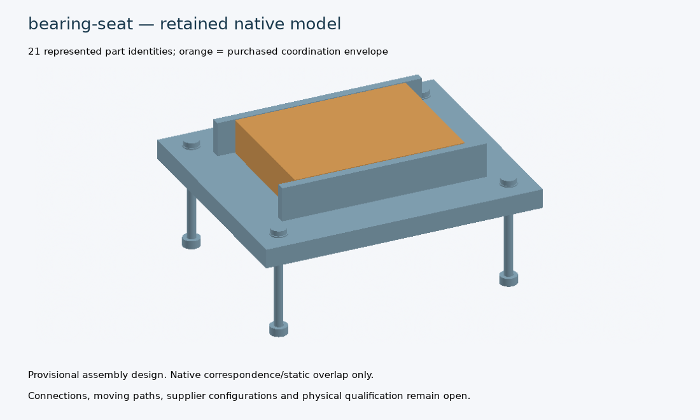
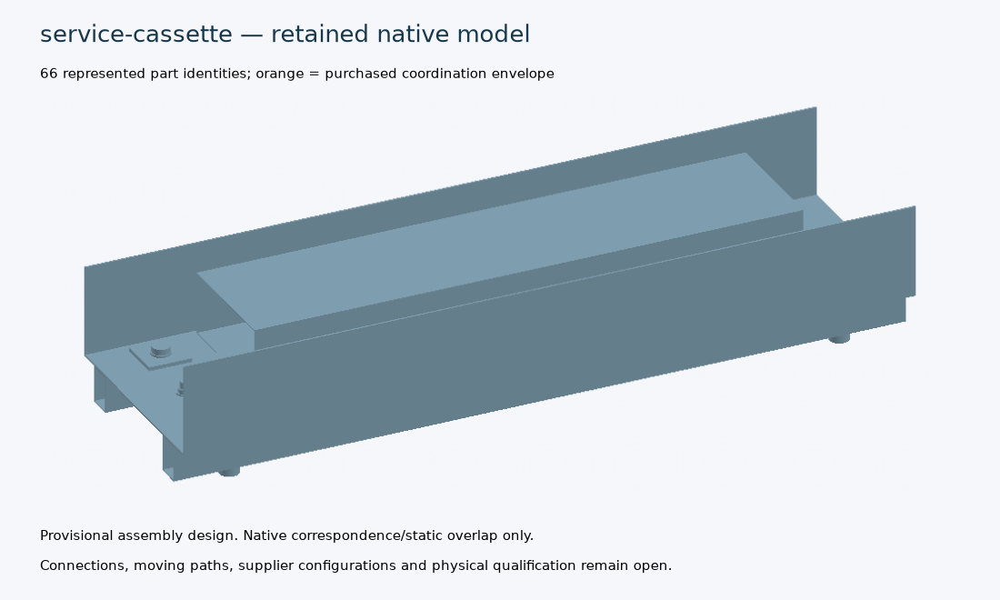
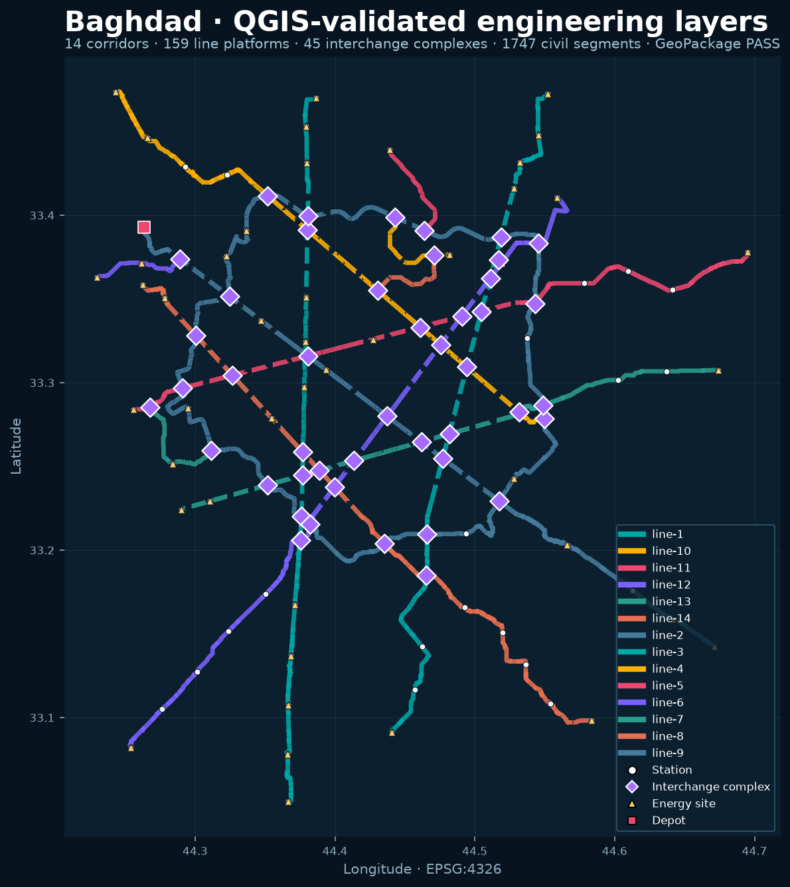
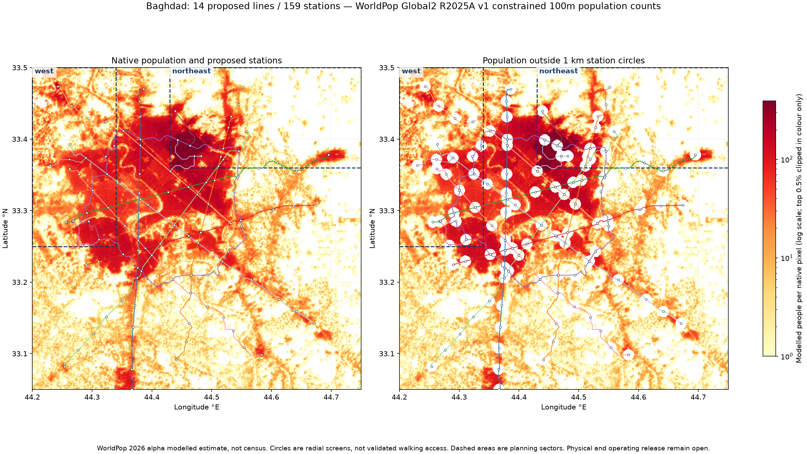
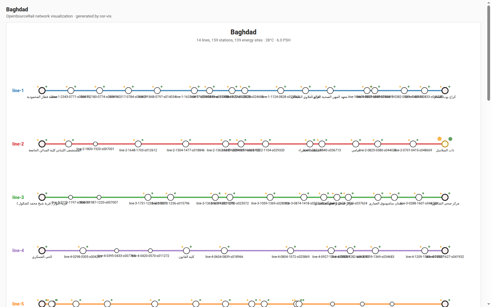
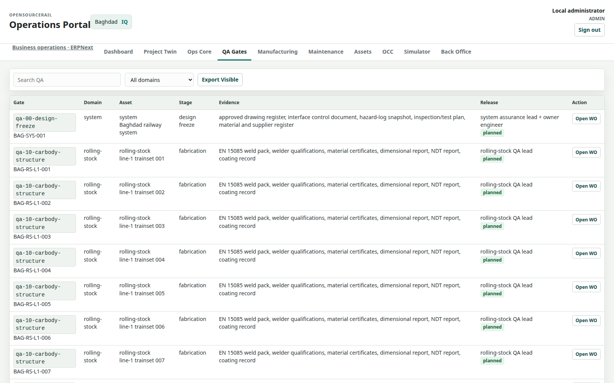

Provisional design and simulation inventory. Engineering, manufacturing and physical release remain open. No complete railway or manufacturing release is claimed.
69 registered parts; 60 software allocations; 12 system domains. 0 accepted complete systems.
Configuration: cities/catalogue/west-asia/Iraq/Baghdad/design.toml. Exact hashes and full coverage.
Matching hashes establish source consistency only. Stale receipts require regeneration; unbound evidence requires an applicable receipt. City-specific ground, duty, supplier and physical acceptance gates remain open.
source-current-provisional-research. Named Baghdad six-car provisional component research only; route, ground, duty and production acceptance remain open.
docs/design-engine/assembly-design/index.html | docs/design-engine/assembly-design/manifest.json
62 completed variants; 3 native geometry exhibits. Native correspondence is not engineering acceptance.
docs/design-engine/assembly-design/models/bearing-seat/model.FCStd | docs/design-engine/assembly-design/models/bearing-seat/model.step.gz | docs/design-engine/assembly-design/models/bearing-seat/assembly.ifc.gz | docs/design-engine/assembly-design/models/bearing-seat/overview.png | docs/design-engine/assembly-design/models/bearing-seat/manufacturing-bom.csv | docs/design-engine/assembly-design/models/bearing-seat/result.json | docs/design-engine/assembly-design/models/bearing-seat/native-result.json | docs/design-engine/assembly-design/models/bearing-seat/qa-plan.json

Known failed checks: none recorded in this scoped result. Unresolved checks: 10.
docs/design-engine/assembly-design/models/structural-bay/model.FCStd | docs/design-engine/assembly-design/models/structural-bay/model.step.gz | docs/design-engine/assembly-design/models/structural-bay/assembly.ifc.gz | docs/design-engine/assembly-design/models/structural-bay/overview.png | docs/design-engine/assembly-design/models/structural-bay/manufacturing-bom.csv | docs/design-engine/assembly-design/models/structural-bay/result.json | docs/design-engine/assembly-design/models/structural-bay/native-result.json | docs/design-engine/assembly-design/models/structural-bay/qa-plan.json
Known failed checks: none recorded in this scoped result. Unresolved checks: 15.
docs/design-engine/assembly-design/diagnostics/service-cassette/model.FCStd | docs/design-engine/assembly-design/diagnostics/service-cassette/model.step.gz | docs/design-engine/assembly-design/diagnostics/service-cassette/assembly.ifc.gz | docs/design-engine/assembly-design/diagnostics/service-cassette/overview.png | docs/design-engine/assembly-design/diagnostics/service-cassette/manufacturing-bom.csv | docs/design-engine/assembly-design/diagnostics/service-cassette/result.json | docs/design-engine/assembly-design/diagnostics/service-cassette/native-result.json | docs/design-engine/assembly-design/diagnostics/service-cassette/qa-plan.json

Known failed checks: cassette-system/worst_case_guide_fit, cassette-system/worst_case_connector_float. Unresolved checks: 7.
Presence does not establish motion, collision or physical validation.




| ID | Component | State | Required acceptance |
|---|---|---|---|
| TR-01 | 60E1 reference running rail | provisional-reference | Mill certificate; weld procedure and NDT; geometry and stress-free-temperature records |
| TR-02 | Resilient direct-fixation complete seat kit | provisional-reference | Supplier system tests; anchor pullout; fatigue; insulation; installed torque |
| TR-03 | Elastic clips | provisional-reference | No mixing unqualified clips, pads or baseplates |
| TR-04 | Rail pad / bonded resilient layer | provisional-reference | Supplier ageing and stiffness tests |
| TR-05 | Lateral rail insulators | provisional-reference | Electrical resistance and dimensional inspection |
| TR-06 | Anchor assembly including insert, bolt and washer | provisional-reference | Pullout, fatigue, edge distances; approved torque |
| TR-07 | Vertical/lateral adjustment and levelling kit | provisional-reference | Gauge, cant, height and residual adjustment audit |
| TR-08 | OSR-ST6 precast slab panel | provisional-reference | Maturity, compressive strength, insert survey, crack and lifting inspection |
| TR-09 | ST6 concrete, base and plinths only | provisional-reference | Trial mix, aggregate, cement, sulfate exposure and curing |
| TR-10 | ST6 reinforcement planning allowance | provisional-reference | Released bar schedule, cover, cage and batch trace |
| TR-11 | ST6 bedding / levelling grout | provisional-reference | Bearing contact, flow, shrinkage and trial installation |
| TR-12 | ST6 lifting sockets / engineered anchors | provisional-reference | Supplier lift design, concrete release strength, certified rig and lift plan |
| TR-13 | Drainage channel and removable cover | provisional-reference | Hydraulic/flood design, cleanout access and proof-flow test |
| TR-14 | Rail electrical continuity bond / monitored stray-current provision | provisional-reference | Approved bonding study, corrosion interfaces and continuity test |
| TR-15 | Turnout slab bearer, point drive, detection and locking kit | provisional-reference | Supplier turnout geometry, wheel passage and interlocking tests |
| TR-16 | Rail/deck expansion interface and transition section | provisional-reference | Braking, thermal, seismic, settlement and fatigue analysis |
| TR-17 | Utility ducts, draw pits, barriers and fencing | provisional-reference | Survey utility approvals, flood and evacuation review |
| ME-01 | Underframe and load-bearing car structure | provisional-reference | Family drawings; load cases; crash/fatigue and weld qualification |
| ME-02 | Modular FRP cladding, end frames and service rails | provisional-reference | Laminate/fire/smoke, inserts, panel retention and removal trial |
| ME-03 | Powered bogie complete including frame, suspension and brakes | provisional-reference | Supplier mass/duty/curve data; dynamic and braking acceptance |
| ME-04 | Trailer bogie complete including frame, suspension and brakes | provisional-reference | Family qualification and dimensional/functional tests |
| ME-05 | Wheelset including wheels, axle, bearings and axleboxes | provisional-reference | Axle fatigue, wheel profile, bearing life and traceability |
| ME-06 | Motor and traction inverter/controller set | provisional-reference | Torque-speed, cooling, EMC and duty map |
| ME-07 | 225 kWh nameplate traction battery allocation | provisional-reference | Cell/pack safety, BMS, containment, isolation and thermal propagation |
| ME-08 | Battery support, HV junction box, fuse, contactors and precharge | provisional-reference | Fault-current/protection selectivity, HVIL, isolation and thermal tests |
| ME-09 | Battery/inverter liquid cooling loop | provisional-reference | Heat balance at 50 C ambient, pressure, vibration and leak test |
| ME-10 | HV-to-LV DC/DC and battery-backed auxiliary distribution | provisional-reference | Brownout, transient, short-circuit and autonomy tests |
| ME-11 | HVAC unit, ducts, filters, condensate and mounts | provisional-reference | Fresh-air/heat balance, dust filtration and condensate trial |
| ME-12 | Passenger door package including leaves, drive, locks and detection | provisional-reference | Force, obstruction, escape, locked proof and controller integration |
| ME-13 | Side glazing, window frames, seals and adhesives | provisional-reference | Impact, retention, leak and fire/smoke requirements |
| ME-14 | Intercar coupler, gangway, jumper and air/electrical interfaces | provisional-reference | Coupler load, gangway movement, fire barrier and cable sweep |
| ME-15 | Train-end recovery coupler and sensor cowl | provisional-reference | Recovery/lift trial and RF, optical and acoustic field tests |
| ME-16 | Brake supply/control and parking brake package | provisional-reference | Stopping performance, degraded modes, pressure and leak tests |
| ME-17 | Roof PV, MPPT, mounts and protected DC wiring | provisional-reference | Uplift, shading, isolation, bonding and maintenance access |
| ME-18 | Interior, seats, grab rails, lighting and accessibility kit | provisional-reference | Fixture loads, fire/smoke, lighting and accessible boarding |
| ME-19 | Fire detection, alarm, segregation and suppression provisions | provisional-reference | Hazard analysis, detector coverage and integrated evacuation test |
| ME-20 | HV/LV/data harness, connector and clamp schedule | provisional-reference | Formboard, crimp pull test, continuity, insulation and configuration |
| ME-21 | Service consumables, fasteners, fluids and replacement spares | provisional-reference | Released consumable list, shelf-life and stock policy |
| EL-01 | T-ECU/S end host assembly | provisional-reference | Per-channel rails/watchdogs, relay feedback, reset and fault-injection evidence |
| EL-02 | T-ECU/A application end host assembly | provisional-reference | CPU/RAM/storage, boot, bus, timeout and radio tests |
| EL-03 | T-OBS end host and external sensor assembly | provisional-reference | Field coverage, contamination, stale data, power and stop-distance tests |
| EL-04 | Safety evaluator MCU channel | provisional-reference | No native CAN/RMII assumed; external controllers and measured deadlines |
| EL-05 | Independent hardware heartbeat watchdog | provisional-reference | Stuck high/low, late/early, reset and output inhibition tests |
| EL-06 | Channel power conversion and voltage monitoring branch | provisional-reference | Common-cause fault study; short, UV/OV, transient and thermal trials |
| EL-07 | Application compute module and carrier | provisional-reference | Carrier topology, peripherals, cooling, storage and boot power tests |
| EL-08 | Radar evaluation assembly and CAN interface adapter | provisional-reference | Adapter harness, termination, firmware configuration and freshness test |
| EL-09 | Lidar HAP TX candidate and data/power harness | provisional-reference | Vendor cable/pinout, startup/inrush and timestamp test |
| EL-10 | Stereo camera, carrier-compatible flex and rigid calibration bar | provisional-reference | Stereo calibration, image timing, vibration and thermal drift |
| EL-11 | Ultrasonic sensing position | provisional-reference | Weatherproof candidate selection, acoustic apertures and blind-zone trial |
| EL-12 | Isolated peer cross-check SPI link | provisional-reference | Protocol age/CRC/sequence and short/open/babble fault injection |
| EL-13 | Hardware series permission contacts and independent coil drivers | provisional-reference | Welded contact/driver short/stuck GPIO; fail restrictive truth table |
| EL-14 | HV/LV input surge protection and branch fuse assemblies | provisional-reference | Fuse coordination, voltage drop, hold-up, EMC and full-load test |
| EL-15 | Enclosure, heat spreader, glands, vents and grounding hardware | provisional-reference | Thermal soak, ingress, vibration and accessible replacement |
| EL-16 | Train network switch, isolated CAN and external Ethernet controller set | provisional-reference | Budget, timing, link loss and termination study |
| EL-17 | Train-to-ground radios, modem carrier, antennas and surge arresters | provisional-reference | Spectrum authority, route coverage and link-loss tests |
| EL-18 | W-SBC field cabinet and point/crossing I/O | provisional-reference | Power/UPS, earthing, I/O truth table and resource-control interface |
| EL-19 | S-SBC station host and protected UPS/network enclosure | provisional-reference | Local degraded service, UPS endurance and recovery |
| EL-20 | Operator/server cluster, backup and disaster recovery | provisional-reference | Restore drill, separation, performance and recovery objective |
| CI-01 | Pi20/Pi25 beam, pier cap, column and foundation package | provisional-reference | Released loads, prestress, reinforcement, bearings, fatigue, ground and lift design |
| CI-02 | Walkway, barrier, cable tray and access cassette | provisional-reference | Load, fall-protection, access and vibration checks |
| CI-03 | Station accessible platform, ramp/lift/stair and canopy package | provisional-reference | Surveyed gap/step and swept clearance; drainage and egress |
| CI-04 | Station fire, water, drainage, power and earthing services | provisional-reference | Load/hydraulic study, inspectable routing and commissioning |
| CI-05 | Ticket validators, vending, gates and settlement terminals | provisional-reference | Offline/replay/refund, fare reconciliation and privacy tests |
| CI-06 | Station PA/PIS, CCTV, help points and telecom cabinet | provisional-reference | Acoustic, visibility, accessibility and failover tests |
| CI-07 | Charging contact, interlock, protection, DC/DC and site battery | provisional-reference | Thermal/contact duty, isolation, emergency disconnect and energy simulation |
| CI-08 | Depot lifts, pits, wheel service, wash and recovery equipment | provisional-reference | Load/handling design, permits, wastewater and site layout |
| CI-09 | Precast plant moulds, cage jigs, batch/curing and survey tools | provisional-reference | First article, maturity calibration and repeatability records |
| CI-10 | Rail weld/clip/anchor tools and track survey trolley | provisional-reference | Qualified operators, calibration, weld/NDT and installation trials |
| CI-11 | Electrical bench, harness formboards and EMC/environmental test access | provisional-reference | Golden configuration, calibration, test record and repair trace |